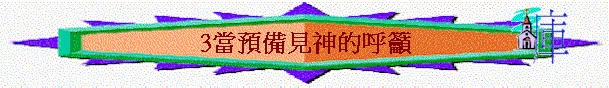

經文：摩4:12-5:15
引言(
4:12)∼4:12提到神對以色列人有什麼呼籲？ 要他們當怎樣？ 當預備迎見神
∼若今天主回來，你認為自己已預備妥當的迎見神嗎？ 為什麼？
一.當預備的原因(4:12)
1.4:12「以色列啊，我必向你如此行」，「我指誰』？ 神 「我必向你如此行」指上文的什麼事？ 之前題及有因有果的追討及審判
2. 「我必向你如此行」與「你當預備迎見神」有什麼關係？
既然之前題及有因有果，神必如此追討，選民當要預備見神(要回轉才能坦然見神)
二.預備迎見的神(4:13)
1.4:13神怎樣介紹自己？ 祂是一位怎樣的神？ 與偶像及列邦的君王有什麼不同或超越之處？
(1)創造者：祂才是創山造風的神，並不是偶像
(2)指示者：祂將心意指示人，並不是假先知、假神能指示屬天的心意
(3)審判者：祂使晨光變為幽暗，代表祂來黑暗的審判，前景不是光明的
(4)至高者：祂才是至高的神，並不是外邦，也不是以色列的首領
(5)元帥者：祂才是萬軍之神，萬軍之主，
2.人若有一天要迎見4:13所形容的神時，你認為人應存什麼心態或應有什麼表現迎見祂？
存敬畏、尊重、感恩、順服、謹慎的心迎見這位至高造物審判主！
3.在你生活中，有沒有一些人物，當你見他時，你有敬重或謹慎的心見他？ 試分享
三.神來時的攻擊(5:1-3)
1.5:1提到什麼事情？ 我指誰？ 阿摩司要以色列聽他為他們所作的哀歌 哀歌代表什麼？ 哀歌指喪禮中哀悼死者的輓歌；此處先知是為以色列即將面臨神的重懲深感悲痛。
2.5:2-3提到神要怎樣攻擊以色列？ 他們有什麼慘況？ 發出一千兵的，只剩一百代表什麼？ 被擊倒、無幫助、多陣亡、終慘敗
四.當預備的行動(5:4-15)
A.尋求真神
1.5:1-3提及神要來攻擊以色列，5:4神又對以色列有什麼呼籲？
2.5:5又提到什麼事？ 我們猜想他們過往在吉甲、伯特利、別是巴尋求什麼？ 若他們繼續在這些地尋求他們所求的，有什麼惡果？
吉甲、伯特利、別是巴是以色列過往敬拜偶像的地方，人尋求偶像，至終這些偶像也要被拆毀，所追求的也歸無有3.5:6又提到什麼事？要尋求耶和華 尋求神會有什麼好的結果？ 得存活
4.5:7-9提到他們應要尋求的神是怎樣的神？ 「昂星」、「參星」指什麼？ 「昂星」----金牛宮七星，「參星」----獵戶星座，當時亞述人以這些星座為敬拜對像
5.為何人要尋求此位神，不尋求其它呢？ 因祂才是國家世界的掌管者，祂可使死蔭變為晨光，命海水澆在地上，人所仰望的不是人的能力，而是神自己，神有力拆毀一切，有能使力強的滅亡，人當仰望祂
6.在你生活中，有沒有經歷尋求神後得著真正的力量與幫助？ 試分享？
B.離惡求善
1
2.5:12又提到他們有什麼惡行 ? 剝削貧民、收受賄賂、屈枉窮乏人 我們猜想城門口是什麼地方? 「城門口」是百姓訴訟的地點
3.5:13他們有以上的惡行，令到一些通達人怎樣？ 靜默不言，不敢說責備的話
4.5:11最終有什麼惡果？ 房屋---不得住在內、葡萄園---不得喝所出來的酒
5.5:14-15 先知要他們作什麼事來預備迎見神 ? 要尋求善 作什麼事才是求善? 棄惡好善、秉公行義、恩待他人收受賄賂、屈枉窮乏人
在城門口秉公行義指什麼事？ 在審判上不收受賄賂、屈枉窮乏人
6.約瑟的餘民指南國的人，還是北國的人？ 北國（約瑟的後裔是瑪拉西及以法蓮支派的人，他們是北國的人） 先知要他們怎對這些餘民？ 向他們施恩
7.若他們如此行，5:14又提到有什麼結果？ 可存活及有神同在
8.若今天主回來，你認為自己有什麼行為及表現是要改善？
總結:
我們今天當如何預備迎見神？
今天查經對你有什麼提醒與得著?
祈禱